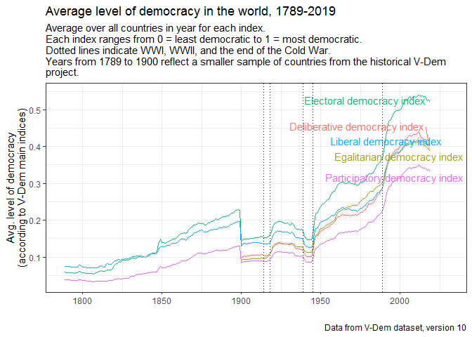
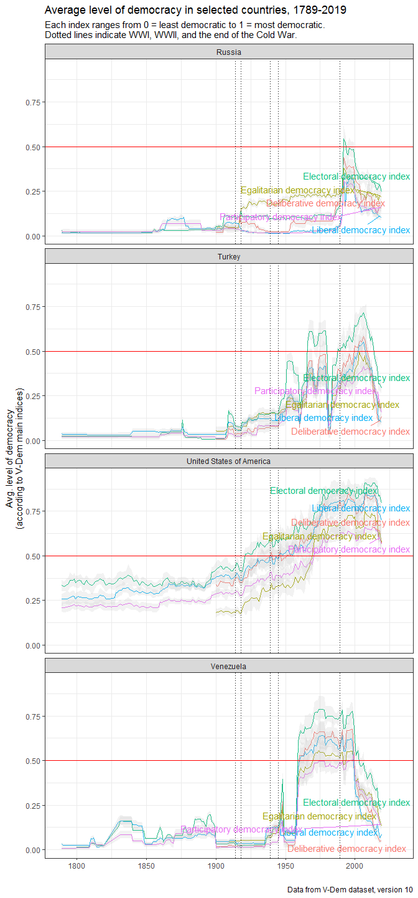

This package provides access to the Varieties of Democracy (V-Dem) dataset, version 11. It includes the dataset’s codebook as a data frame, which allows one to easily search for variables by label or other descriptors. And it also includes a couple of convenience functions, extract_vdem and extract_vdem_filter, to extract subsets of the dataset meeting particular criteria.
Installation
This package is only available on Github for now. Install as follows:
remotes::install_github("xmarquez/vdem")Accessing the VDem dataset
You can access the entire V-Dem dataset by typing VDem_plus. (Access documentation on the dataset by typing ?VDem_plus, or typing vdem_codebook to access the codebook as a data frame.).
Extracting specific variables by label, section number, etc.
The V-Dem dataset is pretty big; including external variables and identifiers, it has 27192 rows and 4188 columns, which takes up a lot of memory and can be confusing to work with. This package thus makes available the function extract_vdem, which allows you to extract a subset of these variables meeting specific criteria. For example, you can just extract the main democracy indices (described in section 2 of the codebook) as follows:
library(vdem)
main_indices <- extract_vdem(section_number = 2)
main_indices
#> # A tibble: 27,192 x 105
#> vdem_country_na~ vdem_country_te~ vdem_country_id year extended_countr~
#> <chr> <chr> <dbl> <dbl> <chr>
#> 1 Mexico MEX 3 1789 Mexico
#> 2 Mexico MEX 3 1790 Mexico
#> 3 Mexico MEX 3 1791 Mexico
#> 4 Mexico MEX 3 1792 Mexico
#> 5 Mexico MEX 3 1793 Mexico
#> 6 Mexico MEX 3 1794 Mexico
#> 7 Mexico MEX 3 1795 Mexico
#> 8 Mexico MEX 3 1796 Mexico
#> 9 Mexico MEX 3 1797 Mexico
#> 10 Mexico MEX 3 1798 Mexico
#> # ... with 27,182 more rows, and 100 more variables: GWn <dbl>,
#> # historical_date <date>, project <dbl>, historical <dbl>, histname <chr>,
#> # codingstart <dbl>, codingend <dbl>, codingstart_contemp <dbl>,
#> # codingend_contemp <dbl>, codingstart_hist <dbl>, codingend_hist <dbl>,
#> # gapstart1 <dbl>, gapstart2 <dbl>, gapstart3 <dbl>, gapend1 <dbl>,
#> # gapend2 <dbl>, gapend3 <dbl>, gap_index <dbl>, vdem_cown <dbl>,
#> # v2x_polyarchy <dbl>, v2x_libdem <dbl>, v2x_partipdem <dbl>,
#> # v2x_delibdem <dbl>, v2x_egaldem <dbl>, v2x_api <dbl>, v2x_mpi <dbl>,
#> # v2x_freexp_altinf <dbl>, v2x_frassoc_thick <dbl>, v2x_suffr <dbl>,
#> # v2xel_frefair <dbl>, v2x_elecoff <dbl>, v2x_liberal <dbl>, v2xcl_rol <dbl>,
#> # v2x_jucon <dbl>, v2xlg_legcon <dbl>, v2x_partip <dbl>, v2x_cspart <dbl>,
#> # v2xdd_dd <dbl>, v2xel_locelec <dbl>, v2xel_regelec <dbl>,
#> # v2xdl_delib <dbl>, v2x_egal <dbl>, v2xeg_eqprotec <dbl>,
#> # v2xeg_eqaccess <dbl>, v2xeg_eqdr <dbl>, v2x_polyarchy_codelow <dbl>,
#> # v2x_libdem_codelow <dbl>, v2x_partipdem_codelow <dbl>,
#> # v2x_delibdem_codelow <dbl>, v2x_egaldem_codelow <dbl>,
#> # v2x_api_codelow <dbl>, v2x_mpi_codelow <dbl>,
#> # v2x_freexp_altinf_codelow <dbl>, v2x_frassoc_thick_codelow <dbl>,
#> # v2xel_frefair_codelow <dbl>, v2x_liberal_codelow <dbl>,
#> # v2xcl_rol_codelow <dbl>, v2x_jucon_codelow <dbl>,
#> # v2xlg_legcon_codelow <dbl>, v2x_partip_codelow <dbl>,
#> # v2x_cspart_codelow <dbl>, v2xel_locelec_codelow <dbl>,
#> # v2xel_regelec_codelow <dbl>, v2xdl_delib_codelow <dbl>,
#> # v2x_egal_codelow <dbl>, v2xeg_eqprotec_codelow <dbl>,
#> # v2xeg_eqaccess_codelow <dbl>, v2xeg_eqdr_codelow <dbl>,
#> # v2x_polyarchy_codehigh <dbl>, v2x_libdem_codehigh <dbl>,
#> # v2x_partipdem_codehigh <dbl>, v2x_delibdem_codehigh <dbl>,
#> # v2x_egaldem_codehigh <dbl>, v2x_api_codehigh <dbl>, v2x_mpi_codehigh <dbl>,
#> # v2x_freexp_altinf_codehigh <dbl>, v2x_frassoc_thick_codehigh <dbl>,
#> # v2xel_frefair_codehigh <dbl>, v2x_liberal_codehigh <dbl>,
#> # v2xcl_rol_codehigh <dbl>, v2x_jucon_codehigh <dbl>,
#> # v2xlg_legcon_codehigh <dbl>, v2x_partip_codehigh <dbl>,
#> # v2x_cspart_codehigh <dbl>, v2xel_locelec_codehigh <dbl>,
#> # v2xel_regelec_codehigh <dbl>, v2xdl_delib_codehigh <dbl>,
#> # v2x_egal_codehigh <dbl>, v2xeg_eqprotec_codehigh <dbl>,
#> # v2xeg_eqaccess_codehigh <dbl>, v2xeg_eqdr_codehigh <dbl>,
#> # GW_startdate <date>, GW_enddate <date>, GWc <chr>, extended_region <chr>,
#> # extended_continent <chr>, microstate <lgl>, lat <dbl>, lon <dbl>,
#> # in_GW_system <lgl>The function extract_vdem always returns a tibble with all the identifiers in the dataset (country name, id, year, COW code, etc.) plus the requested variables. (You will note that this table includes a couple of identifiers I added, providing information about the membership of the country-year in the Gleditsch-Ward state system membership list). You can also specify whether you want the measures of uncertainty included in the dataset (_codehigh and _codelow confidence interval extremes) returned, or whether certain variable types (e.g., ordinal-scale variables) should be excluded.
It is possible to extract variables whose labels mention certain words. For example, you can extract all the variables that mention “corruption” in the codebook labels:
corruption_vars <- extract_vdem(label_pattern = "corrupt")
corruption_vars
#> # A tibble: 27,192 x 63
#> vdem_country_na~ vdem_country_te~ vdem_country_id year extended_countr~
#> <chr> <chr> <dbl> <dbl> <chr>
#> 1 Mexico MEX 3 1789 Mexico
#> 2 Mexico MEX 3 1790 Mexico
#> 3 Mexico MEX 3 1791 Mexico
#> 4 Mexico MEX 3 1792 Mexico
#> 5 Mexico MEX 3 1793 Mexico
#> 6 Mexico MEX 3 1794 Mexico
#> 7 Mexico MEX 3 1795 Mexico
#> 8 Mexico MEX 3 1796 Mexico
#> 9 Mexico MEX 3 1797 Mexico
#> 10 Mexico MEX 3 1798 Mexico
#> # ... with 27,182 more rows, and 58 more variables: GWn <dbl>,
#> # historical_date <date>, project <dbl>, historical <dbl>, histname <chr>,
#> # codingstart <dbl>, codingend <dbl>, codingstart_contemp <dbl>,
#> # codingend_contemp <dbl>, codingstart_hist <dbl>, codingend_hist <dbl>,
#> # gapstart1 <dbl>, gapstart2 <dbl>, gapstart3 <dbl>, gapend1 <dbl>,
#> # gapend2 <dbl>, gapend3 <dbl>, gap_index <dbl>, vdem_cown <dbl>,
#> # v2exbribe <dbl>, v2excrptps <dbl>, v2lgcrrpt <dbl>, v2jucorrdc <dbl>,
#> # v2mecorrpt <dbl>, v3lgcrrpt <dbl>, v2xnp_regcorr <dbl>, v2x_corr <dbl>,
#> # v2x_execorr <dbl>, v2x_pubcorr <dbl>, v2exbribe_codelow <dbl>,
#> # v2excrptps_codelow <dbl>, v2lgcrrpt_codelow <dbl>,
#> # v2jucorrdc_codelow <dbl>, v2mecorrpt_codelow <dbl>,
#> # v3lgcrrpt_codelow <dbl>, v2xnp_regcorr_codelow <dbl>,
#> # v2x_corr_codelow <dbl>, v2x_execorr_codelow <dbl>,
#> # v2x_pubcorr_codelow <dbl>, v2exbribe_codehigh <dbl>,
#> # v2excrptps_codehigh <dbl>, v2lgcrrpt_codehigh <dbl>,
#> # v2jucorrdc_codehigh <dbl>, v2mecorrpt_codehigh <dbl>,
#> # v3lgcrrpt_codehigh <dbl>, v2xnp_regcorr_codehigh <dbl>,
#> # v2x_corr_codehigh <dbl>, v2x_execorr_codehigh <dbl>,
#> # v2x_pubcorr_codehigh <dbl>, GW_startdate <date>, GW_enddate <date>,
#> # GWc <chr>, extended_region <chr>, extended_continent <chr>,
#> # microstate <lgl>, lat <dbl>, lon <dbl>, in_GW_system <lgl>And here we extract variables that refer to civil society, including “external” ones bundled with the dataset but not produced by the V-Dem project itself:
civil_society <- extract_vdem(name_pattern = "^v2cl",
label_pattern = "civil society",
include_external = TRUE)
civil_society
#> # A tibble: 27,192 x 158
#> vdem_country_na~ vdem_country_te~ vdem_country_id year extended_countr~
#> <chr> <chr> <dbl> <dbl> <chr>
#> 1 Mexico MEX 3 1789 Mexico
#> 2 Mexico MEX 3 1790 Mexico
#> 3 Mexico MEX 3 1791 Mexico
#> 4 Mexico MEX 3 1792 Mexico
#> 5 Mexico MEX 3 1793 Mexico
#> 6 Mexico MEX 3 1794 Mexico
#> 7 Mexico MEX 3 1795 Mexico
#> 8 Mexico MEX 3 1796 Mexico
#> 9 Mexico MEX 3 1797 Mexico
#> 10 Mexico MEX 3 1798 Mexico
#> # ... with 27,182 more rows, and 153 more variables: GWn <dbl>,
#> # historical_date <date>, project <dbl>, historical <dbl>, histname <chr>,
#> # codingstart <dbl>, codingend <dbl>, codingstart_contemp <dbl>,
#> # codingend_contemp <dbl>, codingstart_hist <dbl>, codingend_hist <dbl>,
#> # gapstart1 <dbl>, gapstart2 <dbl>, gapstart3 <dbl>, gapend1 <dbl>,
#> # gapend2 <dbl>, gapend3 <dbl>, gap_index <dbl>, vdem_cown <dbl>,
#> # v2cltort <dbl>, v2clkill <dbl>, v2clslavem <dbl>, v2clslavef <dbl>,
#> # v2cltrnslw <dbl>, v2clrspct <dbl>, v2clacjstm <dbl>, v2clacjstw <dbl>,
#> # v2clacjust <dbl>, v2clsocgrp <dbl>, v2clrgunev <dbl>, v2clsnlpct <dbl>,
#> # v2cldiscm <dbl>, v2cldiscw <dbl>, v2clacfree <dbl>, v2clrelig <dbl>,
#> # v2clfmove <dbl>, v2cldmovem <dbl>, v2cldmovew <dbl>, v2clstown <dbl>,
#> # v2clprptym <dbl>, v2clprptyw <dbl>, v2clgencl <dbl>, v2clgeocl <dbl>,
#> # v2clpolcl <dbl>, v2clrgstch_0 <dbl>, v2clrgstch_1 <dbl>,
#> # v2clrgstch_2 <dbl>, v2clrgstch_3 <dbl>, v2clrgstch_4 <dbl>,
#> # v2clrgstch_5 <dbl>, v2clrgstch_6 <dbl>, v2clrgstch_7 <dbl>,
#> # v2clrgstch_8 <dbl>, v2clrgstch_9 <dbl>, v2clrgstch_10 <dbl>,
#> # v2clrgstch_11 <dbl>, v2clrgstch_12 <dbl>, v2clrgstch_13 <dbl>,
#> # v2clrgstch_14 <dbl>, v2clrgstch_15 <dbl>, v2clrgstch_16 <dbl>,
#> # v2clrgstch_17 <dbl>, v2clrgstch_18 <dbl>, v2clrgstch_19 <dbl>,
#> # v2clrgstch_20 <dbl>, v2clrgstch_21 <dbl>, v2clrgwkch_0 <dbl>,
#> # v2clrgwkch_1 <dbl>, v2clrgwkch_2 <dbl>, v2clrgwkch_3 <dbl>,
#> # v2clrgwkch_4 <dbl>, v2clrgwkch_5 <dbl>, v2clrgwkch_6 <dbl>,
#> # v2clrgwkch_7 <dbl>, v2clrgwkch_8 <dbl>, v2clrgwkch_9 <dbl>,
#> # v2clrgwkch_10 <dbl>, v2clrgwkch_11 <dbl>, v2clrgwkch_12 <dbl>,
#> # v2clrgwkch_13 <dbl>, v2clrgwkch_14 <dbl>, v2clrgwkch_15 <dbl>,
#> # v2clrgwkch_16 <dbl>, v2clrgwkch_17 <dbl>, v2clrgwkch_18 <dbl>,
#> # v2clrgwkch_19 <dbl>, v2clrgwkch_20 <dbl>, v2clrgwkch_21 <dbl>,
#> # v2cltort_codelow <dbl>, v2clkill_codelow <dbl>, v2clslavem_codelow <dbl>,
#> # v2clslavef_codelow <dbl>, v2cltrnslw_codelow <dbl>,
#> # v2clrspct_codelow <dbl>, v2clacjstm_codelow <dbl>,
#> # v2clacjstw_codelow <dbl>, v2clacjust_codelow <dbl>,
#> # v2clsocgrp_codelow <dbl>, v2clrgunev_codelow <dbl>,
#> # v2clsnlpct_codelow <dbl>, ...You can use any regular expression you like to search over the variable names or label names. See ?extract_vdem for all options.
If you need more control over the variables extracted, or need to learn more about them, you can use the codebook:
vdem_codebook
#> # A tibble: 764 x 22
#> section number name label type project_manager additional_vers~
#> <int> <chr> <chr> <chr> <chr> <chr> <chr>
#> 1 2 2.1.1 v2x_~ Elec~ (D) Jan Teorell *_codelow, *_co~
#> 2 2 2.1.2 v2x_~ Libe~ (D) Jan Teorell *_codelow, *_co~
#> 3 2 2.1.3 v2x_~ Libe~ (D) Jan Teorell *_codelow, *_co~
#> 4 2 2.1.4 v2x_~ Part~ (D) Jan Teorell *_codelow, *_co~
#> 5 2 2.1.5 v2x_~ Deli~ (D) Jan Teorell *_codelow, *_co~
#> 6 2 2.1.6 v2x_~ Egal~ (D) Rachel Sigman,~ *_codelow, *_co~
#> 7 2 2.2.1 v2x_~ Addi~ (D) Jan Teorell *_codelow, *_co~
#> 8 2 2.2.2 v2x_~ Mult~ (D) Jan Teorell *_codelow, *_co~
#> 9 2 2.2.3 v2x_~ Free~ (D) Svend-Erik Ska~ *_codelow, *_co~
#> 10 2 2.2.4 v2x_~ Free~ (D) Allen Hicken, ~ *_codelow, *_co~
#> # ... with 754 more rows, and 15 more variables: available_versions <chr>,
#> # question <chr>, clarification <chr>, responses <chr>, answer_type <chr>,
#> # scale <chr>, ordering <chr>, aggregation <chr>, cross_coder <chr>,
#> # data_release <chr>, source <chr>, cleaning <chr>, citation <chr>,
#> # years <chr>, note <chr>You can use the function extract_vdem_filter to exercise finer control over the extraction process. For example, here we extract all variables listed in section 2 of the codebook except component indices:
extract_vdem_filter(section == 2, !grepl("component index", label))
#> # A tibble: 27,192 x 93
#> vdem_country_na~ vdem_country_te~ vdem_country_id year extended_countr~
#> <chr> <chr> <dbl> <dbl> <chr>
#> 1 Mexico MEX 3 1789 Mexico
#> 2 Mexico MEX 3 1790 Mexico
#> 3 Mexico MEX 3 1791 Mexico
#> 4 Mexico MEX 3 1792 Mexico
#> 5 Mexico MEX 3 1793 Mexico
#> 6 Mexico MEX 3 1794 Mexico
#> 7 Mexico MEX 3 1795 Mexico
#> 8 Mexico MEX 3 1796 Mexico
#> 9 Mexico MEX 3 1797 Mexico
#> 10 Mexico MEX 3 1798 Mexico
#> # ... with 27,182 more rows, and 88 more variables: GWn <dbl>,
#> # historical_date <date>, project <dbl>, historical <dbl>, histname <chr>,
#> # codingstart <dbl>, codingend <dbl>, codingstart_contemp <dbl>,
#> # codingend_contemp <dbl>, codingstart_hist <dbl>, codingend_hist <dbl>,
#> # gapstart1 <dbl>, gapstart2 <dbl>, gapstart3 <dbl>, gapend1 <dbl>,
#> # gapend2 <dbl>, gapend3 <dbl>, gap_index <dbl>, vdem_cown <dbl>,
#> # v2x_polyarchy <dbl>, v2x_libdem <dbl>, v2x_partipdem <dbl>,
#> # v2x_delibdem <dbl>, v2x_egaldem <dbl>, v2x_api <dbl>, v2x_mpi <dbl>,
#> # v2x_freexp_altinf <dbl>, v2x_frassoc_thick <dbl>, v2x_suffr <dbl>,
#> # v2xel_frefair <dbl>, v2x_elecoff <dbl>, v2xcl_rol <dbl>, v2x_jucon <dbl>,
#> # v2xlg_legcon <dbl>, v2x_cspart <dbl>, v2xdd_dd <dbl>, v2xel_locelec <dbl>,
#> # v2xel_regelec <dbl>, v2xeg_eqprotec <dbl>, v2xeg_eqaccess <dbl>,
#> # v2xeg_eqdr <dbl>, v2x_polyarchy_codelow <dbl>, v2x_libdem_codelow <dbl>,
#> # v2x_partipdem_codelow <dbl>, v2x_delibdem_codelow <dbl>,
#> # v2x_egaldem_codelow <dbl>, v2x_api_codelow <dbl>, v2x_mpi_codelow <dbl>,
#> # v2x_freexp_altinf_codelow <dbl>, v2x_frassoc_thick_codelow <dbl>,
#> # v2xel_frefair_codelow <dbl>, v2xcl_rol_codelow <dbl>,
#> # v2x_jucon_codelow <dbl>, v2xlg_legcon_codelow <dbl>,
#> # v2x_cspart_codelow <dbl>, v2xel_locelec_codelow <dbl>,
#> # v2xel_regelec_codelow <dbl>, v2xeg_eqprotec_codelow <dbl>,
#> # v2xeg_eqaccess_codelow <dbl>, v2xeg_eqdr_codelow <dbl>,
#> # v2x_polyarchy_codehigh <dbl>, v2x_libdem_codehigh <dbl>,
#> # v2x_partipdem_codehigh <dbl>, v2x_delibdem_codehigh <dbl>,
#> # v2x_egaldem_codehigh <dbl>, v2x_api_codehigh <dbl>, v2x_mpi_codehigh <dbl>,
#> # v2x_freexp_altinf_codehigh <dbl>, v2x_frassoc_thick_codehigh <dbl>,
#> # v2xel_frefair_codehigh <dbl>, v2xcl_rol_codehigh <dbl>,
#> # v2x_jucon_codehigh <dbl>, v2xlg_legcon_codehigh <dbl>,
#> # v2x_cspart_codehigh <dbl>, v2xel_locelec_codehigh <dbl>,
#> # v2xel_regelec_codehigh <dbl>, v2xeg_eqprotec_codehigh <dbl>,
#> # v2xeg_eqaccess_codehigh <dbl>, v2xeg_eqdr_codehigh <dbl>,
#> # GW_startdate <date>, GW_enddate <date>, GWc <chr>, extended_region <chr>,
#> # extended_continent <chr>, microstate <lgl>, lat <dbl>, lon <dbl>,
#> # in_GW_system <lgl>And then you can easily use the data for your analyses or to make pretty pictures:
library(tidyverse)
#> -- Attaching packages --------------------------------------- tidyverse 1.3.0 --
#> v ggplot2 3.3.3 v purrr 0.3.4
#> v tibble 3.0.5 v dplyr 1.0.2
#> v tidyr 1.1.2 v stringr 1.4.0
#> v readr 1.4.0 v forcats 0.5.0
#> -- Conflicts ------------------------------------------ tidyverse_conflicts() --
#> x dplyr::filter() masks stats::filter()
#> x dplyr::lag() masks stats::lag()
data <- extract_vdem_filter(section == 2, !grepl("component index", label),
include_uncertainty = FALSE) %>%
gather(index, index_value, v2x_polyarchy:v2x_egaldem) %>%
select(vdem_country_name, vdem_country_id, year, index, index_value) %>%
left_join(extract_vdem_filter(section == 2, !grepl("component index", label),
include_uncertainty = FALSE, include_sd = TRUE) %>%
gather(sd, sd_value, v2x_polyarchy_sd:v2x_egaldem_sd) %>%
select(-v2x_polyarchy:-v2x_egaldem) %>%
select(vdem_country_name, vdem_country_id, year, sd, sd_value)) %>%
filter(index == stringr::str_replace(sd, "_sd","")) %>%
left_join(vdem_codebook %>%
select(name, label) %>%
rename(index = name)) %>%
filter(!is.na(index)) %>%
group_by(year, index) %>%
summarise(mean_index = mean(index_value, na.rm=TRUE),
se = sqrt(sum(sd_value^2, na.rm = TRUE))/n(),
pct_025 = mean_index - 1.96*se,
pct_975 = mean_index + 1.96*se,
label = unique(label))
#> Joining, by = c("vdem_country_name", "vdem_country_id", "year")
#> Joining, by = "index"
#> `summarise()` regrouping output by 'year' (override with `.groups` argument)
library(ggrepel)
ggplot(data) +
geom_line(aes(x = year, y = mean_index, color = label), show.legend = FALSE) +
geom_ribbon(aes(x = year, ymin = pct_025, ymax = pct_975, group = label),
fill = "grey", alpha = 0.2) +
geom_text_repel(data = data %>%
filter(year == 2020),
aes(x = year, y = mean_index, label = label, color = label), show.legend = FALSE) +
theme_bw() +
labs(y = "Avg. level of democracy\n(according to V-Dem main indices)",
color = "", x = "",
title = "Average level of democracy in the world, 1789-2020",
subtitle = "Average over all countries in year for each index.\nEach index ranges from 0 = least democratic to 1 = most democratic.\nDotted lines indicate WWI, WWII, and the end of the Cold War.\nYears from 1789 to 1900 reflect a smaller sample of countries from the historical V-Dem\nproject.",
caption = "Data from V-Dem dataset, version 11") +
geom_vline(xintercept = c(1914, 1918, 1939, 1945, 1989), linetype = 3) +
coord_cartesian(xlim = c(1789, 2030)) +
scale_color_viridis_d()
#> Warning: Removed 222 row(s) containing missing values (geom_path).
data <- extract_vdem_filter(section == 2, !grepl("component index", label),
include_uncertainty = FALSE) %>%
gather(index, index_value, v2x_polyarchy:v2x_egaldem) %>%
select(vdem_country_name, vdem_country_id, year, index, index_value) %>%
left_join(extract_vdem_filter(section == 2, !grepl("component index", label)) %>%
gather(codelow, codelow_value, v2x_polyarchy_codelow:v2x_egaldem_codelow) %>%
select(-v2x_polyarchy:-v2x_egaldem) %>%
select(vdem_country_name, vdem_country_id, year, codelow, codelow_value)) %>%
filter(index == stringr::str_replace(codelow, "_codelow","")) %>%
left_join(extract_vdem_filter(section == 2, !grepl("component index", label)) %>%
gather(codehigh, codehigh_value, v2x_polyarchy_codehigh:v2x_egaldem_codehigh) %>%
select(-v2x_polyarchy:-v2x_egaldem) %>%
select(vdem_country_name, vdem_country_id, year, codehigh, codehigh_value)) %>%
filter(index == stringr::str_replace(codehigh, "_codehigh","")) %>%
left_join(vdem_codebook %>%
select(name, label) %>%
rename(index = name)) %>%
filter(!is.na(index),
vdem_country_name %in% c("Venezuela",
"United States of America",
"Turkey", "Russia", "India"))
#> Joining, by = c("vdem_country_name", "vdem_country_id", "year")
#> Joining, by = c("vdem_country_name", "vdem_country_id", "year")
#> Joining, by = "index"
ggplot(data) +
geom_line(aes(x = year, y = index_value, color = label), show.legend = FALSE) +
geom_ribbon(aes(x = year, ymin = codelow_value, ymax = codehigh_value, group = label),
fill = "grey", alpha = 0.2) +
geom_text_repel(data = data %>%
filter(year == 2020),
aes(x = year, y = index_value, label = label, color = label), show.legend = FALSE) +
theme_bw() +
labs(y = "Avg. level of democracy\n(according to V-Dem main indices)",
color = "", x = "",
title = "Average level of democracy in selected countries, 1789-2020",
subtitle = "Each index ranges from 0 = least democratic to 1 = most democratic.\nDotted lines indicate WWI, WWII, and the end of the Cold War.",
caption = "Data from V-Dem dataset, version 11") +
geom_vline(xintercept = c(1914, 1918, 1939, 1945, 1989), linetype = 3) +
geom_hline(yintercept = 0.5, color = "red") +
coord_cartesian(xlim = c(1789, 2030)) +
facet_wrap(~vdem_country_name, ncol = 1) +
scale_color_viridis_d()
#> Warning: Removed 222 row(s) containing missing values (geom_path).